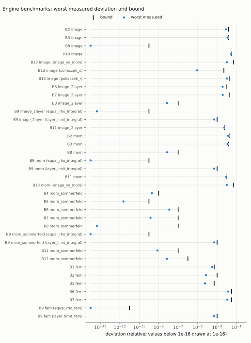
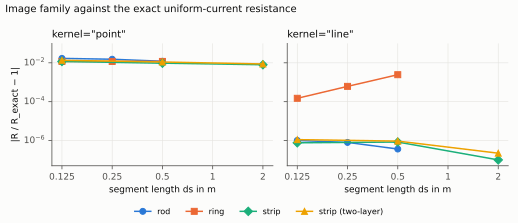
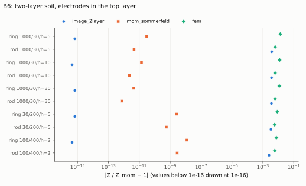

Validation and benchmarks¶
Generated page
Every number on this page comes from one run of the engine benchmark suite, measured on 2026-11-16 with groundfield 2026.11.0 (Python 3.12.16, NumPy 2.4.4, SciPy 1.17.1, numba installed: yes; Darwin arm64), and from the bounds in tests/benchmarks/tolerances.py. The page is written by python scripts/generate_validation_page.py; tests/test_validation_page.py checks that it matches the stored measurements and, with --run-benchmark, that a fresh run reproduces them.
Suite result of that run: 71 passed, 7 skipped (pytest tests/benchmarks --run-benchmark; the skipped tests are combinations a benchmark does not apply to).
What is compared with what¶
Each benchmark puts a world with a known answer in front of the backends. The references do not use a groundfield solver: closed forms (Weber's disc, uniformly loaded ring with elliptic integrals, uniform line currents), an independent analytic Galerkin solver for the thin-wire rod, the Tagg/Sunde series summed to \(|K|^m < 10^{-17}\), mpmath quadrature of the three-layer kernel, and Pollaczek's line impedance. Where a benchmark compares two backends on the same discretisation (B6, B7, B10, B13), it checks the current model of one against the other, not the accuracy of either; the bound states which.
| ID | Benchmark | Case | Reference |
|---|---|---|---|
| B1 | Surface disc | disc b = 1 m on the surface (a coin 10 µm thick), homogeneous 100 Ω·m | ρ/(4b) = 25 Ω, Weber's disc, analytic |
| B2 | Rod, homogeneous soil | rod L = 3 m, a = 8 mm, top at the surface, 100 Ω·m, ds ∈ {0.5, 0.25, 0.125} m | thin-wire limit 33.1957 Ω (independent analytic Galerkin solver, Richardson on 96/192 segments; reduced-kernel end effect leaves ~0.2 % uncertainty); Sunde 33.4927 Ω for orientation |
| B3 | Ring, homogeneous soil | ring r = 2 m, a = 8 mm, z = 0.8 m, 100 Ω·m, ds ∈ {0.5, 0.25, 0.125} m | uniformly loaded thin ring + air image, closed form with complete elliptic integrals: 12.4816 Ω (exact for the thin-wire model by symmetry; Dwight 12.5429 Ω) |
| B4 | Two-layer Sommerfeld kernel | 1050 points: h_1 ∈ {0.05 … 30} m, ρ₂/ρ₁ ∈ {1/2000 … 2000}, s ∈ {0 … 5000} m, five depth pairs | exact Tagg/Sunde image series until |K|^m < 1e-17 |
| B5 | Three-layer Sommerfeld kernel | duplicated stacks [ρ₁, ρ₂, ρ₂] and [ρ₁, ρ₁, ρ₂] (405 points each) and the genuine [100, 1000, 50] Ω·m, h = [2, 1] m | n = 2 series; mpmath.quadosc of the remainder (30 digits) |
| B6 | Top-layer electrodes, two-layer soil | ring r = 2 m at 0.8 m and rod 0–1.5 m; 2L(1000, 30, h₁ ∈ {5, 10, 30}), 2L(30, 200, 5), 2L(100, 400, 2); ds = 0.25 m | mom on the same discretisation |
| B7 | Rod through the layer interface | rod 0–3 m through h₁ = 2 m in 2L(1000, 30) and 2L(100, 1000); ds = 0.25 m | mom: 25.6913 Ω and 64.0749 Ω |
| B8 | Two-port reciprocity | rod A 0–3 m and ring B r = 1.5 m at 0.8 m, 4 m apart; homogeneous, 2L(1000, 30, 5) and the cross-layer 2L(1000, 30, 2); ds = 0.5 m | Z_AB = Z_BA; floating-port mom 17.28197 Ω (2L h₁ = 5) and 1.43970 Ω (h₁ = 2) |
| B9 | Limits of the layered kernels | ring r = 2 m at 0.8 m: TwoLayer(ρ, ρ, h) and MultiLayer([ρ, ρ, ρ]) against homogeneous; 2L(1000, 30) with h₁ = 4 mm and 4 km against homogeneous 30 / 1000 Ω·m; ds = 0.5 m | the homogeneous result of the same backend |
| B10 | Ring with three bonded rods | ring r = 2 m at 0.5 m + three 4 m rods; homogeneous 100 and 2L(1000, 30, 5); ds = 0.25 m | mom on the same discretisation |
| B11 | Grid refinement | grid 40 × 40 m, 4 × 4 meshes, z = 0.8 m, 2L(1000, 30, 5), ds ∈ {5, 2.5, 1.25} m | the backend itself at ds / 2 (convergence contract) |
| B12 | Three-layer grid | grid of B11 in 3L[1000, 30, 200], h = [5, 10] m, ds ∈ {2.5, 1.25} m | mom_sommerfeld with every distinct pair by quadrature (tabulate=False) |
| B13 | Ring with an inductive 400 m line | ring r = 2 m at 0.8 m, isolated 400 m line (95 mm², Neumann, Sommerfeld earth return) to a 3 m rod; f ∈ {50, 1000} Hz; ds = 1 m | compare_engines(image, mom), complex Z at every frequency; the line's per-metre series impedance against the Pollaczek conductor-earth loop impedance R'_dc + Z'_P (references.pollaczek, GMR = a e^{-1/4}) |
Deviations are relative, \(|Z/Z_\text{ref} - 1|\), unless the measure column says otherwise; worst measured is the largest value over the cases of a row (segment lengths, soils, electrodes).

Tolerance table per backend¶
The cross-checks between backends run the image family with kernel="point", the kernel of the mom family, so that they compare current models on one kernel (B8 runs every backend with its default kernel). The default line kernel of the image family is checked separately below.
image¶
| Benchmark | Measure | Bound | Worst measured | Cases | Status | Note |
|---|---|---|---|---|---|---|
| B2 Rod, homogeneous soil | abs(Z/Z_ref - 1) | 1.5 % | 0.79 % | 3 | pass | point kernel |
| B3 Ring, homogeneous soil | abs(Z/Z_ref - 1) | 1.5 % | 1.2 % | 3 | pass | point kernel (10.28) |
| B8 Two-port reciprocity | abs(Z_AB/Z_BA - 1) | 1e-10 | 0 | 1 | pass | |
| B10 Ring with three bonded rods | abs(Z/Z_ref - 1) | 3 % | 2.8 % | 2 | pass | uniform current per straight wire (10.22); target 2 % |
B13 Ring with an inductive 400 m line (image_vs_mom) |
compare_engines row deviation (Re and Im) | 5 % | 1.0 % | 1 | pass | inductive branch shared; galvanic part differs by the ansatz |
B13 Ring with an inductive 400 m line (pollaczek_x) |
abs(X'/X'_P - 1), X' = Im(Z_1600 m - Z_800 m) / 800 m at 1 kHz | 0.5 % | 9.0e-6 | 1 | pass | the two-length difference cancels the end effects; the 400 m line itself is 3.7 % (1 kHz) and 10.8 % (50 Hz) below l X'_P (finite length, l / delta = 2.5 and 0.56) |
B13 Ring with an inductive 400 m line (pollaczek_r) |
abs(R'/R'_P - 1), same difference | 2 % | 1.1 % | 1 | pass | converges from below with the length (-4.5 % for 400/800 m); the 400 m line is 34 % (1 kHz) and 17 % (50 Hz) below l R'_P |
image_2layer¶
| Benchmark | Measure | Bound | Worst measured | Cases | Status | Note |
|---|---|---|---|---|---|---|
| B6 Top-layer electrodes, two-layer soil | abs(Z/Z_ref - 1) | 1 % | 0.37 % | 10 | pass | uniform-current ansatz |
| B7 Rod through the layer interface | abs(Z/Z_ref - 1) | 2 % | 0.38 % | 2 | pass | one uniform current across the interface (F02); bound met since the fix of 10.15 |
| B8 Two-port reciprocity | abs(Z_AB/Z_BA - 1) | 1e-7 | 7.3e-9 | 2 | pass | |
B9 Limits of the layered kernels (equal_rho_integral) |
abs(Z/Z_ref - 1) | 1e-10 | 4.4e-16 | 2 | pass | image_2layer, mom, mom_sommerfeld, cim, bem |
B9 Limits of the layered kernels (layer_limit_integral) |
abs(Z/Z_ref - 1) | 0.1 % | 5.1e-4 | 2 | pass | physical limit |
| B11 Grid refinement | abs(Z(ds)/Z(ds/2) - 1) | 0.6 % | 0.54 % | 2 | pass | not monotone (point kernel); 0.43 % / 0.39 % with one owner for the grid before user decision Q30 |
mom¶
| Benchmark | Measure | Bound | Worst measured | Cases | Status | Note |
|---|---|---|---|---|---|---|
| B2 Rod, homogeneous soil | abs(Z/Z_ref - 1) | 2 % | 1.4 % | 3 | pass | point-source near field drifts under refinement (10.31); target 0.5 % with an exact near field |
| B3 Ring, homogeneous soil | abs(Z/Z_ref - 1) | 1.5 % | 1.2 % | 3 | pass | uniform current by symmetry |
| B8 Two-port reciprocity | abs(Z_AB/Z_BA - 1) | 1e-7 | 7.2e-9 | 2 | pass | |
B9 Limits of the layered kernels (equal_rho_integral) |
abs(Z/Z_ref - 1) | 1e-10 | 0 | 3 | pass | image_2layer, mom, mom_sommerfeld, cim, bem |
B9 Limits of the layered kernels (layer_limit_integral) |
abs(Z/Z_ref - 1) | 0.1 % | 5.1e-4 | 2 | pass | physical limit |
| B11 Grid refinement | abs(Z(ds)/Z(ds/2) - 1) | 1 % | 0.86 % | 2 | pass | |
B13 Ring with an inductive 400 m line (image_vs_mom) |
compare_engines row deviation (Re and Im) | 5 % | 1.0 % | 1 | pass | inductive branch shared; galvanic part differs by the ansatz |
mom_sommerfeld¶
| Benchmark | Measure | Bound | Worst measured | Cases | Status | Note |
|---|---|---|---|---|---|---|
| B4 Two-layer Sommerfeld kernel | rel. kernel error, or SommerfeldConvergenceWarning | 1e-9 | 2.0e-10 | 1 | pass | never silent (10.47); no warning for h_1 >= 0.2 m |
| B5 Three-layer Sommerfeld kernel | rel. kernel error | 1e-10 | 2.3e-13 | 2 | pass | |
| B6 Top-layer electrodes, two-layer soil | abs(Z/Z_ref - 1) | 1e-7 | 1.2e-8 | 10 | pass | kernel check |
| B7 Rod through the layer interface | abs(Z/Z_ref - 1) | 1e-7 | 1.4e-10 | 2 | pass | kernel check |
| B8 Two-port reciprocity | abs(Z_AB/Z_BA - 1) | 1e-7 | 4.4e-16 | 2 | pass | |
B9 Limits of the layered kernels (equal_rho_integral) |
abs(Z/Z_ref - 1) | 1e-10 | 0 | 3 | pass | image_2layer, mom, mom_sommerfeld, cim, bem |
B9 Limits of the layered kernels (layer_limit_integral) |
abs(Z/Z_ref - 1) | 0.1 % | 5.1e-4 | 2 | pass | physical limit |
| B11 Grid refinement | abs(Z/Z_mom - 1) at ds = 5 m | 1e-7 | 7.5e-10 | 1 | pass | kernel check |
| B12 Three-layer grid | max abs(Z_ij,tab / Z_ij - 1) and abs(Z_g1,tab / Z_g1 - 1) | 1e-6 | 6.9e-9 | 4 | pass | depth-group tabulation of the reflected kernel (10.61) |
fem¶
| Benchmark | Measure | Bound | Worst measured | Cases | Status | Note |
|---|---|---|---|---|---|---|
| B1 Surface disc | abs(Z/Z_ref - 1) | 5e-4 | 3.1e-4 | 1 | pass | observed order of convergence 1.87; discretisation of the conforming tensor mesh alone (user decision Q37; up to 2026.11 the hemisphere of the equivalent-hemisphere mesh) |
| B2 Rod, homogeneous soil | abs(Z/Z_ref - 1) | 0.1 % | 7.3e-5 | 3 | pass | solid rod with flat ends (user decision Q37); the thin-wire limit itself is uncertain at a few 1e-4 (33.185 Ω at 384 segments) |
| B3 Ring, homogeneous soil | abs(Z/Z_ref - 1) | 5e-4 | 5.7e-5 | 3 | pass | solid torus (user decision Q37) |
| B6 Top-layer electrodes, two-layer soil | abs(Z/Z_ref - 1) | 3 % | 1.3 % | 10 | pass | conforming model (user decision Q37): the deficit of mom's point kernel (10.28) |
| B7 Rod through the layer interface | abs(Z/Z_ref - 1) | 3 % | 1.1 % | 2 | pass | conforming model (user decision Q37; up to 2026.11 it raised, v0.15.0: +1092 %, silent): the deficit of mom's point kernel |
| B8 Two-port reciprocity | abs(Z_AB/Z_BA - 1) | excluded | — | — | excluded | 3-D model, run once outside the suite (stream fw4int): 0 in all three soils, its port matrix symmetric to 2.2e-16; Z_BA within 0.15 … 0.21 % of mom refined to ds = 1/32 m; mom at the benchmark's 0.5 m reads 0.40 / 0.67 / 0.96 % higher, not converged (on a coaxial rod and ring the axisymmetric model confirms the 3-D transfer resistance to 1.3e-3 and shows mom at 0.5 m 0.3 … 1.3 % high; audit W4R2B-05); excluded from the benchmark run for its cost: rod and ring on different axes are not axisymmetric, so fem solves them with its 3-D model (the fem3d extra; user decision Q37), 0.5 … 1.2 minutes and up to 2 GB per solve, two solves per soil |
B9 Limits of the layered kernels (equal_rho_fem) |
abs(Z/Z_ref - 1) | 1e-12 | 0 | 3 | pass | the conforming model meshes the canonical stack (user decision Q37) |
B9 Limits of the layered kernels (layer_limit_fem) |
abs(Z/Z_ref - 1) | 0.1 % | 5.0e-4 | 2 | pass | physical limit (user decision Q37) |
| B10 Ring with three bonded rods | abs(Z/Z_ref - 1) | excluded | — | — | excluded | 3-D model, run once outside the suite (stream fw4int): +0.62 % / +0.84 % against mom (error estimate 3.9e-3 / 4.3e-3; image / image_2layer +0.81 / +1.97 % above fem); excluded from the benchmark run for its cost: rods off the ring's axis are not axisymmetric, so fem solves the world with its 3-D model (the fem3d extra; user decision Q37), 2 … 3.5 minutes and up to 3.8 GB per soil (up to 2026.11 -35 % / -45 %, radii summed) |
Deprecated names cim and bem¶
cim runs the image auto-dispatch and bem runs mom (deprecated aliases since 2026.11). Their rows reproduce the numbers of the backend they name.
cim (runs image):
| Benchmark | Measure | Bound | Worst measured | Cases | Status | Note |
|---|---|---|---|---|---|---|
| B8 Two-port reciprocity | abs(Z_AB/Z_BA - 1) | 1e-7 | 7.3e-9 | 2 | pass | |
B9 Limits of the layered kernels (equal_rho_integral) |
abs(Z/Z_ref - 1) | 1e-10 | 4.4e-16 | 3 | pass | image_2layer, mom, mom_sommerfeld, cim, bem |
bem (runs mom):
| Benchmark | Measure | Bound | Worst measured | Cases | Status | Note |
|---|---|---|---|---|---|---|
| B8 Two-port reciprocity | abs(Z_AB/Z_BA - 1) | 1e-7 | 7.2e-9 | 2 | pass | |
B9 Limits of the layered kernels (equal_rho_integral) |
abs(Z/Z_ref - 1) | 1e-10 | 0 | 3 | pass | image_2layer, mom, mom_sommerfeld, cim, bem |
Kernel of the image family¶
The image family assumes a uniform current per unit length on each straight wire of an electrode (a wire line of a grid, an arm of a star, a straight run of a polyline; user decision Q30 of 2026.11). For that model the resistance of a straight wire and of a ring has a closed form, so the error of the kernel can be separated from the error of the ansatz. Signed deviation from the exact uniform-current resistance (kernel="line" is the default since 2026.11, kernel="point" reproduces 0.15.0):
| Case | Exact uniform-current R | Kernel | ds = 2 m | ds = 0.5 m | ds = 0.25 m | ds = 0.125 m |
|---|---|---|---|---|---|---|
| rod 3 m from the surface, a = 8 mm, 100 Ω·m (B2 world) | 33.4997 Ω | point |
−1.2 % | −1.5 % | −1.7 % | |
line |
−3.6e-7 | −8.0e-7 | −1.0e-6 | |||
| ring r = 2 m at 0.8 m, a = 8 mm, 100 Ω·m (B3 world) | 12.4816 Ω | point |
−1.2 % | −1.2 % | −1.2 % | |
line |
−0.24 % | −6.1e-4 | −1.5e-4 | |||
| strip 10 m at 0.5 m, a = 5 mm, 100 Ω·m | 14.9411 Ω | point |
+0.80 % | −0.96 % | −1.2 % | |
line |
−1.1e-16 | −8.3e-7 | −7.6e-7 | |||
| strip 10 m at 0.5 m, a = 5 mm, two-layer 1000/30 Ω·m, h₁ = 5 m | 129.9464 Ω | point |
+0.88 % | −1.1 % | −1.3 % | |
line |
−2.2e-7 | −9.3e-7 | −1.1e-6 |
Against the thin-wire solution of the same rod (33.1957 Ω, the B2 reference, which lets the current vary along the rod) the line kernel stays at +0.92 % for every segment length: that is the error of the uniform-current ansatz, not of the kernel. The point kernel lies at −0.79 % … −0.30 %, closer by accident — its kernel error has the opposite sign and partly cancels the ansatz error.

Two-layer soil, electrodes in the top layer (B6)¶
mom on the same discretisation is the reference: mom_sommerfeld integrates the same layered Green's function numerically (a kernel check), image_2layer replaces the computed current distribution by a uniform one (an ansatz check), fem solves the electrodes as solid bodies in a volume mesh (an independent method; the difference is the deficit of the point kernel of mom).

Field quantities near the electrode¶
Impedances average the potential over the electrode, so the uniform-current ansatz of the image family errs little there; the surface potential next to a grid corner or a star tip depends on the local current density, which the ansatz gets wrong. mom on the same discretisation (homogeneous 100 Ω·m, 1 A, ds = 0.5 m) is the reference; touch voltage with the feet 1 m outside the corner, tip or wire (anchor="footprint"), step voltage from the surface point above the corner, tip or wire 1 m outwards, mesh voltage at the centre of the corner mesh. The point rows share the kernel of mom and isolate the ansatz:
| Case | Backend (kernel) | Impedance | Touch voltage, 1 m outside | Step voltage, 1 m | Mesh voltage |
|---|---|---|---|---|---|
| grid 20 m × 20 m, 4 × 4 meshes, at 0.5 m; corner | mom (reference) |
2.3473 Ω | 0.9377 V/A | 0.3664 V/A | 0.5305 V/A |
image (point) |
+0.57 % | +5.1 % | −11 % | +6.1 % | |
image (line) |
+1.1 % | +6.4 % | −11 % | +8.6 % | |
| star, 4 arms of 10 m, at 0.5 m; arm tip | mom (reference) |
5.3784 Ω | 3.4271 V/A | 0.7858 V/A | — |
image (point) |
+3.4 % | +8.8 % | −22 % | — | |
image (line) |
+4.3 % | +10 % | −23 % | — | |
| ring r = 5 m at 0.5 m | mom (reference) |
6.3596 Ω | 2.9730 V/A | 1.0493 V/A | — |
image (point) |
+4.4e-16 | +6.7e-16 | −1.2e-15 | — | |
image (line) |
+0.88 % | +1.8 % | +5.3e-5 | — |
The safety helpers emit UniformCurrentFieldWarning when a result of the image family is evaluated within 5 m of such a shape; see the image engine.
All measured values¶
Every value of the run (one row per benchmark case)
| Benchmark | Key | Case | Measured | Bound |
|---|---|---|---|---|
| B1 | fem |
levels 0/1 | 3.1e-4 | 5e-4 |
| B1 | fem |
observed order | 1.87 | — |
| B2 | image |
ds=0.5 | 0.30 % | 1.5 % |
| B2 | image |
ds=0.25 | 0.63 % | 1.5 % |
| B2 | image |
ds=0.125 | 0.79 % | 1.5 % |
| B2 | mom |
ds=0.5 | 0.63 % | 2 % |
| B2 | mom |
ds=0.25 | 1.1 % | 2 % |
| B2 | mom |
ds=0.125 | 1.4 % | 2 % |
| B2 | fem |
ds=0.5 | 7.3e-5 | 0.1 % |
| B2 | fem |
ds=0.25 | 7.3e-5 | 0.1 % |
| B2 | fem |
ds=0.125 | 7.3e-5 | 0.1 % |
| B3 | image |
ds=0.5 | 1.2 % | 1.5 % |
| B3 | image |
ds=0.25 | 1.2 % | 1.5 % |
| B3 | image |
ds=0.125 | 1.2 % | 1.5 % |
| B3 | mom |
ds=0.5 | 1.2 % | 1.5 % |
| B3 | mom |
ds=0.25 | 1.2 % | 1.5 % |
| B3 | mom |
ds=0.125 | 1.2 % | 1.5 % |
| B3 | fem |
ds=0.5 | 5.7e-5 | 5e-4 |
| B3 | fem |
ds=0.25 | 5.7e-5 | 5e-4 |
| B3 | fem |
ds=0.125 | 5.7e-5 | 5e-4 |
| B4 | mom_sommerfeld |
max silent error | 2.0e-10 | 1e-9 |
| B5 | mom_sommerfeld |
duplicated stacks | 2.3e-13 | 1e-10 |
| B5 | mom_sommerfeld |
genuine three layers | 5.8e-16 | 1e-10 |
| B6 | image_2layer |
ring 1000/30/h=5 | 6.7e-16 | 1 % |
| B6 | mom_sommerfeld |
ring 1000/30/h=5 | 3.0e-11 | 1e-7 |
| B6 | fem |
ring 1000/30/h=5 | 1.3 % | 3 % |
| B6 | image_2layer |
rod 1000/30/h=5 | 0.37 % | 1 % |
| B6 | mom_sommerfeld |
rod 1000/30/h=5 | 4.5e-12 | 1e-7 |
| B6 | fem |
rod 1000/30/h=5 | 0.63 % | 3 % |
| B6 | image_2layer |
ring 1000/30/h=10 | 4.4e-16 | 1 % |
| B6 | mom_sommerfeld |
ring 1000/30/h=10 | 1.4e-11 | 1e-7 |
| B6 | fem |
ring 1000/30/h=10 | 1.2 % | 3 % |
| B6 | image_2layer |
rod 1000/30/h=10 | 0.36 % | 1 % |
| B6 | mom_sommerfeld |
rod 1000/30/h=10 | 2.2e-12 | 1e-7 |
| B6 | fem |
rod 1000/30/h=10 | 0.62 % | 3 % |
| B6 | image_2layer |
ring 1000/30/h=30 | 6.7e-16 | 1 % |
| B6 | mom_sommerfeld |
ring 1000/30/h=30 | 4.4e-12 | 1e-7 |
| B6 | fem |
ring 1000/30/h=30 | 1.2 % | 3 % |
| B6 | image_2layer |
rod 1000/30/h=30 | 0.36 % | 1 % |
| B6 | mom_sommerfeld |
rod 1000/30/h=30 | 7.4e-13 | 1e-7 |
| B6 | fem |
rod 1000/30/h=30 | 0.61 % | 3 % |
| B6 | image_2layer |
ring 30/200/h=5 | 6.7e-16 | 1 % |
| B6 | mom_sommerfeld |
ring 30/200/h=5 | 2.6e-9 | 1e-7 |
| B6 | fem |
ring 30/200/h=5 | 0.85 % | 3 % |
| B6 | image_2layer |
rod 30/200/h=5 | 0.33 % | 1 % |
| B6 | mom_sommerfeld |
rod 30/200/h=5 | 5.6e-10 | 1e-7 |
| B6 | fem |
rod 30/200/h=5 | 0.57 % | 3 % |
| B6 | image_2layer |
ring 100/400/h=2 | 4.4e-16 | 1 % |
| B6 | mom_sommerfeld |
ring 100/400/h=2 | 1.2e-8 | 1e-7 |
| B6 | fem |
ring 100/400/h=2 | 0.75 % | 3 % |
| B6 | image_2layer |
rod 100/400/h=2 | 0.25 % | 1 % |
| B6 | mom_sommerfeld |
rod 100/400/h=2 | 2.8e-9 | 1e-7 |
| B6 | fem |
rod 100/400/h=2 | 0.59 % | 3 % |
| B7 | mom_sommerfeld |
1000/30 | 4.4e-11 | 1e-7 |
| B7 | mom_sommerfeld |
100/1000 | 1.4e-10 | 1e-7 |
| B7 | image_2layer |
1000/30 | 0.38 % | 2 % |
| B7 | image_2layer |
100/1000 | 2.2e-4 | 2 % |
| B7 | fem |
1000/30 | 0.35 % | 3 % |
| B7 | fem |
100/1000 | 1.1 % | 3 % |
| B8 | image |
homogeneous | 0 | 1e-10 |
| B8 | image_2layer |
top_layer | 2.2e-16 | 1e-7 |
| B8 | image_2layer |
cross_layer | 7.3e-9 | 1e-7 |
| B8 | cim |
top_layer | 2.2e-16 | 1e-7 |
| B8 | cim |
cross_layer | 7.3e-9 | 1e-7 |
| B8 | mom |
top_layer | 6.7e-16 | 1e-7 |
| B8 | mom |
cross_layer | 7.2e-9 | 1e-7 |
| B8 | bem |
top_layer | 6.7e-16 | 1e-7 |
| B8 | bem |
cross_layer | 7.2e-9 | 1e-7 |
| B8 | mom_sommerfeld |
top_layer | 4.4e-16 | 1e-7 |
| B8 | mom_sommerfeld |
cross_layer | 3.3e-16 | 1e-7 |
| B9 | equal_rho_integral |
image_2layer TwoLayer(100,100,h=0.5) | 4.4e-16 | 1e-10 |
| B9 | equal_rho_integral |
image_2layer TwoLayer(100,100,h=30) | 0 | 1e-10 |
| B9 | equal_rho_integral |
cim TwoLayer(100,100,h=0.5) | 4.4e-16 | 1e-10 |
| B9 | equal_rho_integral |
cim TwoLayer(100,100,h=30) | 0 | 1e-10 |
| B9 | equal_rho_integral |
cim MultiLayer([100]*3) | 0 | 1e-10 |
| B9 | equal_rho_integral |
mom TwoLayer(100,100,h=0.5) | 0 | 1e-10 |
| B9 | equal_rho_integral |
mom TwoLayer(100,100,h=30) | 0 | 1e-10 |
| B9 | equal_rho_integral |
mom MultiLayer([100]*3) | 0 | 1e-10 |
| B9 | equal_rho_integral |
bem TwoLayer(100,100,h=0.5) | 0 | 1e-10 |
| B9 | equal_rho_integral |
bem TwoLayer(100,100,h=30) | 0 | 1e-10 |
| B9 | equal_rho_integral |
bem MultiLayer([100]*3) | 0 | 1e-10 |
| B9 | equal_rho_integral |
mom_sommerfeld TwoLayer(100,100,h=0.5) | 0 | 1e-10 |
| B9 | equal_rho_integral |
mom_sommerfeld TwoLayer(100,100,h=30) | 0 | 1e-10 |
| B9 | equal_rho_integral |
mom_sommerfeld MultiLayer([100]*3) | 0 | 1e-10 |
| B9 | equal_rho_fem |
fem TwoLayer(100,100,h=0.5) | 0 | 1e-12 |
| B9 | equal_rho_fem |
fem TwoLayer(100,100,h=30) | 0 | 1e-12 |
| B9 | equal_rho_fem |
fem MultiLayer([100]*3) | 0 | 1e-12 |
| B9 | layer_limit_integral |
image_2layer h1=0.004 | 5.1e-4 | 0.1 % |
| B9 | layer_limit_integral |
mom h1=0.004 | 5.1e-4 | 0.1 % |
| B9 | layer_limit_integral |
mom_sommerfeld h1=0.004 | 5.1e-4 | 0.1 % |
| B9 | layer_limit_fem |
fem h1=0.004 | 5.0e-4 | 0.1 % |
| B9 | layer_limit_integral |
image_2layer h1=4000 | 2.0e-4 | 0.1 % |
| B9 | layer_limit_integral |
mom h1=4000 | 2.0e-4 | 0.1 % |
| B9 | layer_limit_integral |
mom_sommerfeld h1=4000 | 2.0e-4 | 0.1 % |
| B9 | layer_limit_fem |
fem h1=4000 | 2.0e-4 | 0.1 % |
| B10 | image |
HomogeneousSoil | 1.4 % | 3 % |
| B10 | image |
TwoLayerSoil | 2.8 % | 3 % |
| B11 | image_2layer |
5->2.5 | 0.54 % | 0.6 % |
| B11 | image_2layer |
2.5->1.25 | 0.35 % | 0.6 % |
| B11 | mom |
5->2.5 | 0.86 % | 1 % |
| B11 | mom |
2.5->1.25 | 0.14 % | 1 % |
| B11 | mom_sommerfeld |
ds=5 | 7.5e-10 | 1e-7 |
| B12 | mom_sommerfeld |
matrix ds=2.5 | 0 | 1e-6 |
| B12 | mom_sommerfeld |
Z ds=2.5 | 0 | 1e-6 |
| B12 | mom_sommerfeld |
matrix ds=1.25 | 6.9e-9 | 1e-6 |
| B12 | mom_sommerfeld |
Z ds=1.25 | 1.5e-10 | 1e-6 |
| B13 | image_vs_mom |
worst row | 1.0 % | 5 % |
| B13 | pollaczek_x |
X' 1 kHz | 9.0e-6 | 0.5 % |
| B13 | pollaczek_r |
R' 1 kHz | 1.1 % | 2 % |
Regenerating this page¶
python scripts/generate_validation_page.py --measure # about 1–3 min
python -m pytest tests/test_validation_page.py # page up to date
The benchmark tests themselves (pytest tests/benchmarks --run-benchmark) fail when a value leaves its bound; this page only reports them. A change of a bound or of a measured value therefore shows up here after --measure, and the test of the page fails until the page is regenerated.